{kind=link}
{kind=link}
{kind=link}
{kind=link}
{kind=link}
{kind=link}
{kind=link}
{kind=link}
{kind=link}
{kind=link}
{kind=link}
{kind=link}
{kind=link}
{kind=link}
{kind=link}
 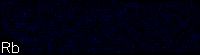
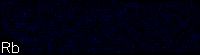
{kind=link}
{kind=link}


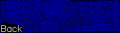
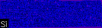
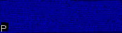
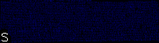
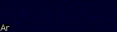
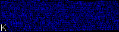
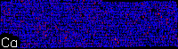
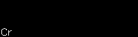
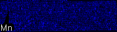
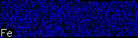
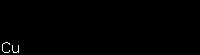
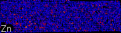
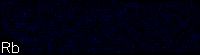
 Maximum
Maximum
Scan: X= 119.405, Y= 33.2050 mm
X Compress: 1, Y Compress: 1
X Scaled: 1.00000, Y Scaled: 1.00000
X size: 23881, Y Size: 6641
Processed: 23147959242, Bad: 0
Valid: 22669616799, Clipped: 478342443
DA Matrix:
/data/xfm/config/geopixe_config/384D22/user/18500eV/arabid_seeds_100um_2xKapton_90um_384D22_18500eV.damx
DA Source:
/data/xfm/data/2019r3/Wang_15515/raw/384D22/Arabid_seeds/48042/48042.1
DA Charge: 0.250177
| Back 0.113 ppm | Si 146.% | P 6.24% | S 6.21% | Cl 11.0% | Ar 2.89% |
| K 4.68% | Ca 1.50% | Cr 2.19% | Mn 361. ppm | Fe 0.551% | Ni 1.57% |
| Cu 1.03% | Zn 0.165% | As 0.588% | Se 0.674% | Br 0.762% | Rb 0.122% |
| Sr 0.397% | Compton 523.% | elastic 117.% | Flux0 1.22E+09 ppm | Flux1 8.40E+08 ppm |
The counting statistics in a single pixel are generally low. This means that there can
be large differences in deduced ppm.charge between neighbouring pixels.
This is normal. Estimation of concentration in portions of the image involves
integrating an average over the region. This averages out much of this
statistics variation to yield concentration estimation with low detection limits.
However, these statistics can lead to a misleading colour scale for the image, as
the image appears to show concentration variation over a large range at the pixel level.
This means that some images show large maximum values despite a generally low concentration.
(To help alleviate this problem, use image smoothing filters, or use average concentrations over a selected region, as shown below.)
It should also be noted that overlap and background subtraction may lead to some pixels having negative values. For example, areas with zero concentration will have as many negative as positive pixels. When regions are integrated, all values are averaged and the correct concentration results. However, some images may appear to show areas with positive signal due to statistical fluctuations despite zero average concentration because negative pixels are shown in black.
The Australian Synchrotron, Australia © 2013